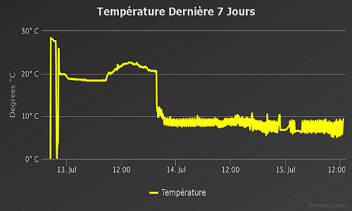

- Température
- Compteur de production
- Optimisation de process
Made in Tunisia
Avec beaucoup d’honneur et fierté, nous vous informons que nos solutions technologiques sont développées en Tunisie par des compétences locales.
Be SMART
Nous vous invitons à utiliser nos solutions technologiques S.M.A.R.T : Spécifique, Mesurable, Ambitieux, Réaliste et Temporel.
Approuvé
Depuis sa création SMART LOGGER ne cesse pas à remporter les premiers prix des concours nationaux d’innovation et d’entreprenariat.
Qui Sommes Nous?
TEKNICZ Une startup tunisienne.Une expérience de deux ans dans le développement des solutions embarquées d'automatisation.Nous offrons des services optimisées selon vos besoins dans plusieurs secteurs.
Notre Mission
Accélérer la transformation digitale
Notre But
Votre satisfaction est notre priorité
Nos Ambitions
Intégrer les nouvelles technologies
Services
C'est la Performance Qui Compte!
THERMO-CONNECT
Suivi et Surveillance en Temps Réel et Notification Instantannée
est un service Internet qui surveille vos réfrigérateurs, chambres froides, laboratoires... Il utilise les sondes de température sur wifi et vous prévient par Email, SMS, Telegram et Sirène en cas de dépassement de température.Pas de logiciel à installer sur vos PC. Un login et un mot de passe vous suffisent pour accéder à votre plateforme de surveillance, paramétrer vos sondes et vos enregistreurs, vos seuils d'alarmes et consulter toutes les données enregistrées.Vous accédez à votre plateforme depuis n'importe quel PC Mac, smartphone ou tablette, sans limite du nombre 'utilisateur, 24h/24, 7j/7.Vous pouvez utiliser TEKNICZ-THERMO-CONNECT sur plusieurs sites.
INDUSTRIE 4.0
Contrôler Vos Machines à Distance!
TEKNICZ-THERMO-CONNECT est un service Internet qui surveille vos réfrigérateurs, chambres froides, laboratoires... Il utilise les sondes de température sur wifi et vous prévient par Email, SMS, Telegram et Sirène en cas de dépassement de température.Pas de logiciel à installer sur vos PC. Un login et un mot de passe vous suffisent
TEKNICZ-THERMO-CONNECT est un service Internet qui surveille vos réfrigérateurs, chambres froides, laboratoires... Il utilise les sondes de température sur wifi et vous prévient par Email, SMS, Telegram et Sirène en cas de dépassement de température. Pas de logiciel à installer sur vos PC. Un login et un mot de passe vous suffisent pour accéder à votre plateforme de surveillance, paramétrer vos sondes et vos enregistreurs, vos seuils d'alarmes et consulter toutes les données enregistrées sous plusieurs formes (listes ou de plans ou de tableau de bord. Vous accédez à votre plateforme depuis n'importe quel PC Mac, smartphone ou tablette, sans limite du nombre d'utilisateur, 24h/24, 7j/7.Vous pouvez utiliser TEKNICZ-THERMO-CONNECT sur plusieurs sites.
Industrie 4.0 consiste à sécuriser l’emmagasinage des produits alimentaires dans les entrepôts frigorifiques. En effet notre kit électronique converti des indicateurs de performances, généralement des grandeurs physiques telles que la température, le taux d’humidité en des Data Cloud accessibles à distance sur une base de données. L’utilisateur peut surveiller son espace à distance sur une plateforme web à travers l’internet. En cas d’anomalie, instantanément il reçoit une alerte afin de réagir le plus rapide possible.

Domotique
Avoir une maison connectée n'est plus un rêve!
L’industrie 4.0 est une réorganisation complète du mode de production avec les outils existants et donnant une plus grande importance au réseau. Cette nouvelle génération d’usines a pour objectif de relancer le dynamisme de l’industrie. Notre solution SMART Monitoring est une combinaison de capteurs, automates, Big data, Internet des objets, cloud computing ayant pour objectif de modernisation de la production, augmentation de la compétitivité, positionnement face aux enjeux de la mondialisation. La solution contient plusieurs kits électroniques installés soit directement sur les machines principales de productions ou bien au niveau des postes opérateurs. Grace à ces systèmes connectés, nous pouvons extraire en temps réel des statistiques et des informations jugées nécessaires pour superviser la chaine de production. Tous les Data collectés peuvent être visualisés en ligne via l’internent soit dans la salle de contrôle soit à l’extérieur de l’usine.
Statistiques
0
Clients
0
Projets
0
Heures de travail
0
Hard Workers
Notre Portfolio


Contactez Société des travaux techniques
N'hésitez pas à nous contacter pour toutes informations complémentaires. Nous serions très heureux de recevoir et traiter votre consultation.